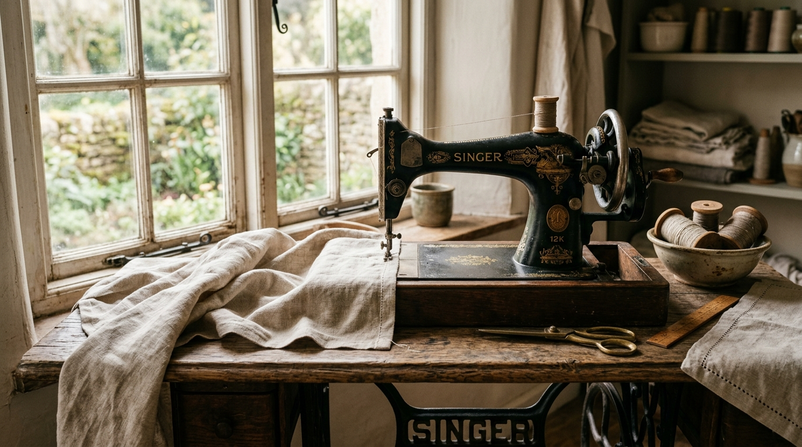

1790 工业革命萌芽期 · 英国
Thomas Saint 与第一份缝纫机械图纸专利
18世纪末工业革命的浪潮席卷欧洲，手工制衣的产能无法满足日益激增的服装需求。1790年，英国木工发明家托马斯·圣特（Thomas Saint）获得了世界上第一份用于缝制皮革和厚帆布的机械专利。其构想包含锥子预打孔、叉形针引入线圈的机械雏形。尽管当时未实现批量投产，但它首次确立了“以机械连杆代替纯手工捏针穿透”的现代缝纫工程思维。
工学校勘：
此时机械仍试图全盘模拟人类手指“捏针完全穿透面料”的动作，机构极其复杂，这也是早期缝纫机械探索中最关键的认知瓶颈。

Early Sewing Machinery Concept · 早期铸铁机械与工业革命